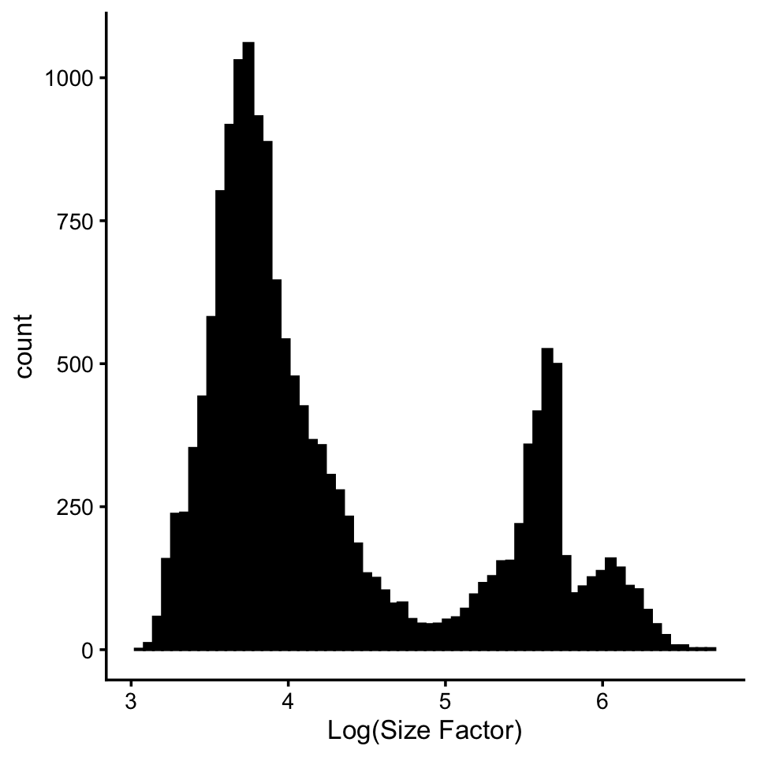
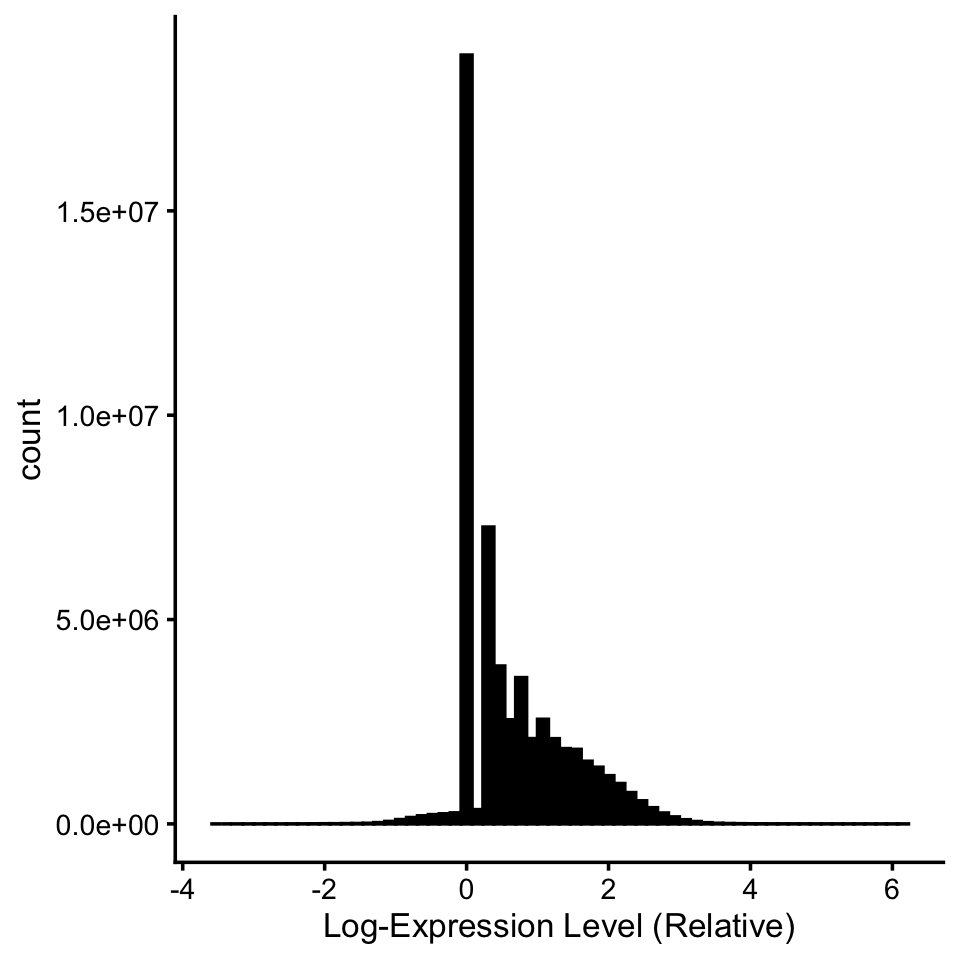
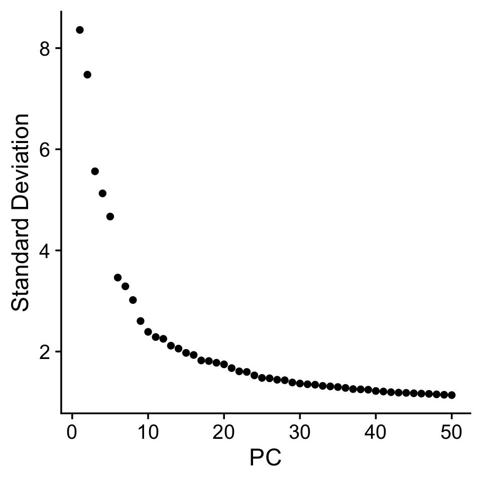

Enhanced Visualization and Exploration of Pancreas Data using Seurat
Sagnik Nandy
Last updated: 2024-11-04
Checks: 5 1
Knit directory:
single-cell-jamboree-main/analysis/
This reproducible R Markdown analysis was created with workflowr (version 1.7.1). The Checks tab describes the reproducibility checks that were applied when the results were created. The Past versions tab lists the development history.
Great job! The global environment was empty. Objects defined in the global environment can affect the analysis in your R Markdown file in unknown ways. For reproduciblity it’s best to always run the code in an empty environment.
The command set.seed(1) was run prior to running the
code in the R Markdown file. Setting a seed ensures that any results
that rely on randomness, e.g. subsampling or permutations, are
reproducible.
Great job! Recording the operating system, R version, and package versions is critical for reproducibility.
Nice! There were no cached chunks for this analysis, so you can be confident that you successfully produced the results during this run.
Great job! Using relative paths to the files within your workflowr project makes it easier to run your code on other machines.
Tracking code development and connecting the code version to the
results is critical for reproducibility. To start using Git, open the
Terminal and type git init in your project directory.
This project is not being versioned with Git. To obtain the full
reproducibility benefits of using workflowr, please see
?wflow_start.
In this analysis, we aim to generate an improved visualization of
pancreas data from the 2022 benchmarking study by [Luecken et
al.][luecken-2022] using the Seurat package in R. This analysis uses the
pre-processed dataset, pancreas.RData.
1. Load Libraries
Load the necessary libraries for data analysis, plotting, and Seurat analysis.
library(Seurat)
# Loading required package: SeuratObject
# Loading required package: sp
# 'SeuratObject' was built under R 4.4.0 but the current version is
# 4.4.1; it is recomended that you reinstall 'SeuratObject' as the ABI
# for R may have changed
# 'SeuratObject' was built with package 'Matrix' 1.7.0 but the current
# version is 1.7.1; it is recomended that you reinstall 'SeuratObject' as
# the ABI for 'Matrix' may have changed
#
# Attaching package: 'SeuratObject'
# The following objects are masked from 'package:base':
#
# intersect, t
library(tidyverse)
# ── Attaching core tidyverse packages ──────────────────────── tidyverse 2.0.0 ──
# ✔ dplyr 1.1.4 ✔ readr 2.1.5
# ✔ forcats 1.0.0 ✔ stringr 1.5.1
# ✔ ggplot2 3.5.1 ✔ tibble 3.2.1
# ✔ lubridate 1.9.3 ✔ tidyr 1.3.1
# ✔ purrr 1.0.2
# ── Conflicts ────────────────────────────────────────── tidyverse_conflicts() ──
# ✖ dplyr::filter() masks stats::filter()
# ✖ dplyr::lag() masks stats::lag()
# ℹ Use the conflicted package (<http://conflicted.r-lib.org/>) to force all conflicts to become errors
library(patchwork)
library(cowplot)
#
# Attaching package: 'cowplot'
#
# The following object is masked from 'package:patchwork':
#
# align_plots
#
# The following object is masked from 'package:lubridate':
#
# stamp
library(RColorBrewer)
library(Biobase)
# Loading required package: BiocGenerics
#
# Attaching package: 'BiocGenerics'
#
# The following objects are masked from 'package:lubridate':
#
# intersect, setdiff, union
#
# The following objects are masked from 'package:dplyr':
#
# combine, intersect, setdiff, union
#
# The following object is masked from 'package:SeuratObject':
#
# intersect
#
# The following objects are masked from 'package:stats':
#
# IQR, mad, sd, var, xtabs
#
# The following objects are masked from 'package:base':
#
# anyDuplicated, aperm, append, as.data.frame, basename, cbind,
# colnames, dirname, do.call, duplicated, eval, evalq, Filter, Find,
# get, grep, grepl, intersect, is.unsorted, lapply, Map, mapply,
# match, mget, order, paste, pmax, pmax.int, pmin, pmin.int,
# Position, rank, rbind, Reduce, rownames, sapply, setdiff, table,
# tapply, union, unique, unsplit, which.max, which.min
#
# Welcome to Bioconductor
#
# Vignettes contain introductory material; view with
# 'browseVignettes()'. To cite Bioconductor, see
# 'citation("Biobase")', and for packages 'citation("pkgname")'.
library(clusterSim)
# Loading required package: cluster
# Loading required package: MASS
#
# Attaching package: 'MASS'
#
# The following object is masked from 'package:patchwork':
#
# area
#
# The following object is masked from 'package:dplyr':
#
# select
library(fpc)
library(ggpubr)
#
# Attaching package: 'ggpubr'
#
# The following object is masked from 'package:cowplot':
#
# get_legend
library(gridExtra)
#
# Attaching package: 'gridExtra'
#
# The following object is masked from 'package:Biobase':
#
# combine
#
# The following object is masked from 'package:BiocGenerics':
#
# combine
#
# The following object is masked from 'package:dplyr':
#
# combine2. Define Custom Functions
Define any custom functions for the analysis. This includes a customized plotting function for dimensional reduction (e.g., UMAP or PCA) and a function to create an elbow plot of the top variable features in a Seurat object.
# Customized dimensional reduction plot function (e.g., UMAP or PCA)
DimPlot <- function(
data,
dims = c(1, 2), # Dimensions to plot (e.g., UMAP1 and UMAP2)
cells = NULL, # Subset of cells to plot
cols = NULL, # Colors for different groups
pt.size = NULL, # Point size for plotting
reduction = NULL, # Dimensional reduction technique (e.g., "umap" or "pca")
group.by = NULL, # Metadata column to color by
split.by = NULL, # Metadata column to facet by
shape.by = NULL, # Metadata column to shape by
order = NULL, # Custom order for plotting
shuffle = FALSE, # Option to shuffle data points to randomize plotting order
seed = 1, # Random seed for shuffling
label = FALSE, # Option to add labels to clusters
label.size = 4, # Size of cluster labels
label.color = 'black', # Color of the labels
label.box = FALSE, # Option to put labels in a box
repel = FALSE, # Use repelling labels to avoid overlap
cells.highlight = NULL, # Subset of cells to highlight
cols.highlight = '#DE2D26', # Color for highlighted cells
sizes.highlight = 1, # Size of highlighted cells
na.value = 'grey50', # Color for NA values
ncol = NULL, # Number of columns for faceting
combine = TRUE, # Combine plots into one
raster = NULL, # Option to use raster graphics
raster.dpi = c(512, 512) # Resolution for raster graphics
) {
if (length(x = dims) != 2) {
stop("'dims' must be a two-length vector")
}
colnames(data) <- paste0("UMAP", dims)
data <- as.data.frame(x = data)
dims <- paste0("UMAP", dims)
data <- cbind(data, group.by)
orig.groups <- group.by
group.by <- colnames(x = data)[3:ncol(x = data)]
for (group in group.by) {
if (!is.factor(x = data[, group])) {
data[, group] <- factor(x = data[, group])
}
}
if (!is.null(x = shape.by)) {
data[, shape.by] <- object[[shape.by, drop = TRUE]]
}
if (!is.null(x = split.by)) {
data[, split.by] <- object[[split.by, drop = TRUE]]
}
if (isTRUE(x = shuffle)) {
set.seed(seed = seed)
data <- data[sample(x = 1:nrow(x = data)), ]
}
plots <- lapply(
X = group.by,
FUN = function(x) {
plot <- SingleDimPlot(
data = data[, c(dims, x, split.by, shape.by)],
dims = dims,
col.by = x,
cols = cols,
pt.size = pt.size,
shape.by = shape.by,
order = order,
label = FALSE,
cells.highlight = cells.highlight,
cols.highlight = cols.highlight,
sizes.highlight = sizes.highlight,
na.value = na.value,
raster = raster,
raster.dpi = raster.dpi
)
if (label) {
plot <- LabelClusters(
plot = plot,
id = x,
repel = repel,
size = label.size,
split.by = split.by,
box = label.box,
color = label.color
)
}
if (!is.null(x = split.by)) {
plot <- plot + FacetTheme() +
facet_wrap(
facets = vars(!!sym(x = split.by)),
ncol = if (length(x = group.by) > 1 || is.null(x = ncol)) {
length(x = unique(x = data[, split.by]))
} else {
ncol
}
)
}
plot <- if (is.null(x = orig.groups)) {
plot + labs(title = NULL)
} else {
plot + labs(title = NULL)
}
}
)
if (!is.null(x = split.by)) {
ncol <- 1
}
if (combine) {
plots <- wrap_plots(plots, ncol = orig.groups %iff% ncol)
}
return(plots)
}
create_elbow_plot <- function(object, assay = "RNA", k = 5000) {
# Get the high variable feature information
hvf.info <- HVFInfo(object = object, assay = assay)
# Sort the features by standardized variance in descending order
sorted_standardized_variances <- hvf.info[order(hvf.info$variance.standardized, decreasing = TRUE), ]
# Convert row names to a column named "Gene"
sorted_standardized_variances <- sorted_standardized_variances %>%
tibble::rownames_to_column("Gene") %>%
mutate(Gene_Index = row_number())
# Select the top k genes based on variance
top_interest <- head(sorted_standardized_variances, k)
# Create the elbow plot
ggplot(top_interest, aes(x = Gene_Index, y = variance.standardized)) +
geom_line() +
labs(title = paste("Elbow Plot of Top", k, "Genes by Standardized Variance"),
x = paste("Top", k, "Genes (ordered by variance)"),
y = "Standardized Variance") +
theme_minimal()
}
# Function to create an elbow plot for Seurat objects
create_elbow_plot <- function(object, assay = "RNA", k = 5000) {
hvf.info <- HVFInfo(object = object, assay = assay)
sorted_standardized_variances <- hvf.info[order(hvf.info$variance.standardized, decreasing = TRUE), ]
sorted_standardized_variances <- sorted_standardized_variances %>%
tibble::rownames_to_column("Gene") %>%
mutate(Gene_Index = row_number())
top_interest <- head(sorted_standardized_variances, k)
ggplot(top_interest, aes(x = Gene_Index, y = variance.standardized)) +
geom_line() +
labs(
title = paste("Elbow Plot of Top", k, "Genes by Standardized Variance"),
x = paste("Top", k, "Genes (ordered by variance)"),
y = "Standardized Variance"
) +
theme_minimal()
}3. Set Working Directory and Load Data
Set the working directory to the location of the
pancreas.RData file, and load the dataset, which contains
“counts” and “sample_info”.
#setwd("/path/to/directory") # Replace with your directory path
load("/Users/sagnik/Dropbox/Research Projects/Mathew Stephens/EBNMF/Pancreas/pancreas.RData")4. Study Size Factors
Visualize the distribution of total counts (size factors) per cell in log scale.
s <- rowSums(counts)
pdat <- data.frame(log_size_factor = log10(s))
ggplot(pdat, aes(log_size_factor)) +
geom_histogram(bins = 64, col = "black", fill = "black") +
labs(x = "Log(Size Factor)") +
theme_cowplot(font_size = 10)
5. Study Gene Expression Levels
Examine the distribution of gene expression levels in the dataset.
p <- counts[counts > 0] # Filter non-zero counts
pdat <- data.frame(log_rel_expression_level = log10(p))
ggplot(pdat, aes(log_rel_expression_level)) +
geom_histogram(bins = 64, col = "black", fill = "black") +
labs(x = "Log-Expression Level (Relative)") +
theme_cowplot(font_size = 10)
6. Create Seurat Object
Create a Seurat object from the counts data, using
sample_info as metadata. Normalize the data with a custom
scale factor based on the mean size factor.
pancreas <- CreateSeuratObject(counts = t(counts), project = "pancreas", meta.data = sample_info)
scale_factor <- mean(s)
pancreas <- NormalizeData(pancreas, normalization.method = "LogNormalize", scale.factor = scale_factor)
# Normalizing layer: counts7. Identify Variable Features
Identify the top 5,000 variable genes.
pancreas <- FindVariableFeatures(pancreas, selection.method = "vst", nfeatures = 5000)
# Finding variable features for layer counts
VariableFeaturePlot(pancreas)
# Warning in scale_x_log10(): log-10 transformation introduced infinite values.8. Elbow Plot of Variable Features
Generate an elbow plot to analyze variance across the top variable features.
create_elbow_plot(object = pancreas, assay = "RNA", k = 5000)
9. Select Top 1,000 Variable Features
Select the top 1,000 variable genes for further analysis.
desired_genes <- head(VariableFeatures(pancreas), 1000)10. Scale Data and Run PCA
Scale the data for the selected features and run PCA.
pancreas <- ScaleData(pancreas, features = desired_genes)
# Centering and scaling data matrix
pancreas <- RunPCA(pancreas, assay = "RNA", features = desired_genes)
# PC_ 1
# Positive: CHGA, VGF, PCSK1, CRYBA2, IAPP, ADCYAP1, PAPPA2, PRUNE2, EDN3, ELMO1
# SORL1, BMP5, DLK1, C10orf10, PLCB4, RBP4, LOXL4, KLHL41, NPY, PFKFB2
# PLCE1, PDK4, SLC25A6, WSCD2, TMED8, RGS16, PTP4A3, GPM6A, SLC25A34, WNK3
# Negative: ZFP36L1, PMEPA1, SERPING1, SOX4, MSN, TACSTD2, C1S, NFIB, LGALS1, FSTL1
# CFB, CLIC4, SERPINH1, ENC1, KRT7, LTBP1, CLDN1, UACA, PHLDA1, ITGA5
# COL4A1, SERPINA3, COL4A2, IL32, CD44, SDC4, C1R, FN1, PDZK1IP1, LCN2
# PC_ 2
# Positive: SPARC, PDGFRB, BGN, COL15A1, COL6A2, COL1A2, COL5A1, COL3A1, AEBP1, SFRP2
# MRC2, LUM, LAMA4, COL5A2, THBS2, MMP2, THY1, TIMP3, IGFBP4, HTRA3
# CDH11, LRRC32, PXDN, COL4A1, NID1, LAMC3, DCN, COL6A3, VCAN, PRRX1
# Negative: SERPINA3, PDZK1IP1, TACSTD2, GATM, MUC1, LCN2, SDC4, KRT7, ANPEP, CFB
# KRT8, SPINK1, KRT18, PRSS1, CPA2, CLDN4, AKR1C3, PRSS8, TC2N, PNLIP
# REG1A, CLDN1, IL32, KLK1, CTRB1, CPA1, CTRC, TM4SF1, PLA2G1B, PRSS3
# PC_ 3
# Positive: CFTR, VTCN1, TSPAN8, MMP7, AQP1, SPP1, SLC3A1, SLC4A4, HSD17B2, ALDH1A3
# ANXA3, CEACAM7, LGALS4, SERPINA5, SORL1, KRT23, TINAGL1, APCDD1, ANXA4, CTSH
# CLDN10, CD74, APCS, VCAM1, SLPI, PIGR, PRKCA, KRT19, CRP, PDLIM3
# Negative: CELA3B, CELA3A, CTRB1, SYCN, KLK1, PNLIPRP1, CLPS, CELA2A, CPA2, CTRC
# PLA2G1B, CPA1, CELA2B, CTRB2, CTRL, CUZD1, PNLIPRP2, PRSS1, GP2, CPB1
# PNLIP, PRSS3, REG3G, PDIA2, REG1B, RNASE1, AMY2A, MGST1, REG1A, SPINK1
# PC_ 4
# Positive: PLVAP, CD93, KDR, PECAM1, ROBO4, ESM1, ECSCR, ACVRL1, VWF, FLT1
# ESAM, RGCC, S1PR1, ERG, CDH5, CXCR4, BCL6B, CLEC14A, PODXL, PTPRB
# PASK, ABI3, IFI27, CALCRL, ANGPT2, PCDH12, MYCT1, MMRN2, STC1, ACKR3
# Negative: LUM, SFRP2, COL1A2, THBS2, COL6A3, COL5A1, COL3A1, COL5A2, FMOD, VCAN
# DCN, LTBP2, COL1A1, CDH11, FN1, HEYL, TNFAIP6, ANTXR1, PRRX1, MXRA8
# HSD11B1, COL8A1, PDGFRB, ADAMTS12, PDGFRA, LAMC3, ISLR, WISP1, SPON2, WNT5A
# PC_ 5
# Positive: EXPH5, MEG3, PEAK1, PLCB4, PFKFB2, PRUNE2, ANO5, ZNF33B, DGKB, INSR
# REG3A, CEL, TCF4, ZNF721, PNLIP, LYZ, SORL1, ENTPD3, ZNF124, BCAT1
# PTCHD4, USP54, COX15, GSTA2, ALB, NEAT1, NRG4, CHL1, CPB1, FLT1
# Negative: KRT19, SERPINA1, SERPING1, TFPI2, TINAGL1, MMP7, CCL2, PMEPA1, ALDH1A3, KRT23
# SLC25A6, VCAM1, CFTR, LGALS4, MYL9, HSPB1, SERPINA5, FSTL3, LAMB3, TGM2
# CXCL6, DDIT4, CTGF, KRT17, PLAUR, SERINC2, PRSS8, CXCL1, IGFBP7, VTCN1
ElbowPlot(pancreas, ndims = 50)
11. Run UMAP
Perform UMAP using the top 25 principal components.
pancreas <- RunUMAP(pancreas, dims = 1:25)
# Warning: The default method for RunUMAP has changed from calling Python UMAP via reticulate to the R-native UWOT using the cosine metric
# To use Python UMAP via reticulate, set umap.method to 'umap-learn' and metric to 'correlation'
# This message will be shown once per session
# 18:17:36 UMAP embedding parameters a = 0.9922 b = 1.112
# 18:17:36 Read 16382 rows and found 25 numeric columns
# 18:17:36 Using Annoy for neighbor search, n_neighbors = 30
# 18:17:36 Building Annoy index with metric = cosine, n_trees = 50
# 0% 10 20 30 40 50 60 70 80 90 100%
# [----|----|----|----|----|----|----|----|----|----|
# **************************************************|
# 18:17:37 Writing NN index file to temp file /var/folders/wc/v_nfs9816z5gz9p6y3_q53pm0000gn/T//Rtmp4prGTy/filead2032ed9278
# 18:17:37 Searching Annoy index using 1 thread, search_k = 3000
# 18:17:40 Annoy recall = 100%
# 18:17:40 Commencing smooth kNN distance calibration using 1 thread with target n_neighbors = 30
# 18:17:41 Initializing from normalized Laplacian + noise (using RSpectra)
# 18:17:41 Commencing optimization for 200 epochs, with 716942 positive edges
# 18:17:45 Optimization finished
umap_embeddings <- Embeddings(object = pancreas, reduction = "umap")12. Define Colors for Cell Types
Define a color vector for distinguishing 14 different cell types.
col_vector <- c(
"#E41A1C", "#377EB8", "#4DAF4A", "#984EA3", "#FF7F00",
"#FFFF33", "#A65628", "#999999", "#66C2A5", "#FC8D62",
"#8DA0CB", "#E78AC3", "#A6D854", "#FFD92F"
)13. Create UMAP Plots by Cell Type and Technology
Generate UMAP plots where cell types are represented by colors and technology by shapes.
# Create UMAP Plots by Cell Type and Technology
p1 <- DimPlot(umap_embeddings, group.by = sample_info$celltype, pt.size = 0.04, cols = col_vector) +
theme(plot.title = element_text(hjust = 0.5)) +
ggtitle("UMAP of Pancreas Cells by Cell Type")
p2 <- DimPlot(umap_embeddings, group.by = sample_info$tech, pt.size = 0.04, cols = col_vector) +
theme(plot.title = element_text(hjust = 0.5)) +
ggtitle("UMAP of Pancreas Cells by Technology")
# Combine plots side-by-side
combined_plot <- p1 + p2 + plot_layout(ncol = 2)
combined_plotggsave(
filename = "combined_umap_plot.png", # File name and format
plot = combined_plot, # The plot object to save
width = 15, # Width in inches
height = 6, # Height in inches
dpi = 300 # Resolution in dots per inch (for high-quality output)
)
sessionInfo()
# R version 4.4.1 (2024-06-14)
# Platform: aarch64-apple-darwin20
# Running under: macOS 15.0.1
#
# Matrix products: default
# BLAS: /Library/Frameworks/R.framework/Versions/4.4-arm64/Resources/lib/libRblas.0.dylib
# LAPACK: /Library/Frameworks/R.framework/Versions/4.4-arm64/Resources/lib/libRlapack.dylib; LAPACK version 3.12.0
#
# locale:
# [1] en_US.UTF-8/en_US.UTF-8/en_US.UTF-8/C/en_US.UTF-8/en_US.UTF-8
#
# time zone: America/Chicago
# tzcode source: internal
#
# attached base packages:
# [1] stats graphics grDevices utils datasets methods base
#
# other attached packages:
# [1] gridExtra_2.3 ggpubr_0.6.0 fpc_2.2-13
# [4] clusterSim_0.51-5 MASS_7.3-61 cluster_2.1.6
# [7] Biobase_2.64.0 BiocGenerics_0.50.0 RColorBrewer_1.1-3
# [10] cowplot_1.1.3 patchwork_1.3.0 lubridate_1.9.3
# [13] forcats_1.0.0 stringr_1.5.1 dplyr_1.1.4
# [16] purrr_1.0.2 readr_2.1.5 tidyr_1.3.1
# [19] tibble_3.2.1 ggplot2_3.5.1 tidyverse_2.0.0
# [22] Seurat_5.1.0 SeuratObject_5.0.2 sp_2.1-4
#
# loaded via a namespace (and not attached):
# [1] RcppAnnoy_0.0.22 splines_4.4.1 later_1.3.2
# [4] polyclip_1.10-7 fastDummies_1.7.4 lifecycle_1.0.4
# [7] rstatix_0.7.2 rprojroot_2.0.4 globals_0.16.3
# [10] lattice_0.22-6 prabclus_2.3-4 backports_1.5.0
# [13] magrittr_2.0.3 plotly_4.10.4 sass_0.4.9
# [16] rmarkdown_2.28 jquerylib_0.1.4 yaml_2.3.10
# [19] httpuv_1.6.15 sctransform_0.4.1 spam_2.11-0
# [22] flexmix_2.3-19 spatstat.sparse_3.1-0 reticulate_1.39.0
# [25] pbapply_1.7-2 ade4_1.7-22 abind_1.4-8
# [28] Rtsne_0.17 nnet_7.3-19 git2r_0.35.0
# [31] ggrepel_0.9.6 irlba_2.3.5.1 listenv_0.9.1
# [34] spatstat.utils_3.1-0 goftest_1.2-3 RSpectra_0.16-2
# [37] spatstat.random_3.3-2 fitdistrplus_1.2-1 parallelly_1.38.0
# [40] leiden_0.4.3.1 codetools_0.2-20 tidyselect_1.2.1
# [43] farver_2.1.2 matrixStats_1.4.1 stats4_4.4.1
# [46] spatstat.explore_3.3-3 jsonlite_1.8.9 e1071_1.7-16
# [49] progressr_0.15.0 Formula_1.2-5 ggridges_0.5.6
# [52] survival_3.7-0 systemfonts_1.1.0 tools_4.4.1
# [55] ragg_1.3.3 ica_1.0-3 Rcpp_1.0.13
# [58] glue_1.8.0 xfun_0.48 withr_3.0.2
# [61] fastmap_1.2.0 fansi_1.0.6 digest_0.6.37
# [64] timechange_0.3.0 R6_2.5.1 mime_0.12
# [67] textshaping_0.4.0 colorspace_2.1-1 scattermore_1.2
# [70] tensor_1.5 spatstat.data_3.1-2 diptest_0.77-1
# [73] utf8_1.2.4 generics_0.1.3 data.table_1.16.2
# [76] robustbase_0.99-4-1 class_7.3-22 httr_1.4.7
# [79] htmlwidgets_1.6.4 uwot_0.2.2 pkgconfig_2.0.3
# [82] gtable_0.3.6 modeltools_0.2-23 workflowr_1.7.1
# [85] lmtest_0.9-40 htmltools_0.5.8.1 carData_3.0-5
# [88] dotCall64_1.2 scales_1.3.0 png_0.1-8
# [91] spatstat.univar_3.0-1 knitr_1.48 rstudioapi_0.17.1
# [94] tzdb_0.4.0 reshape2_1.4.4 nlme_3.1-166
# [97] proxy_0.4-27 cachem_1.1.0 zoo_1.8-12
# [100] KernSmooth_2.23-24 parallel_4.4.1 miniUI_0.1.1.1
# [103] pillar_1.9.0 grid_4.4.1 vctrs_0.6.5
# [106] RANN_2.6.2 promises_1.3.0 car_3.1-3
# [109] xtable_1.8-4 evaluate_1.0.1 cli_3.6.3
# [112] compiler_4.4.1 rlang_1.1.4 future.apply_1.11.3
# [115] ggsignif_0.6.4 labeling_0.4.3 mclust_6.1.1
# [118] plyr_1.8.9 fs_1.6.5 stringi_1.8.4
# [121] viridisLite_0.4.2 deldir_2.0-4 munsell_0.5.1
# [124] lazyeval_0.2.2 spatstat.geom_3.3-3 Matrix_1.7-1
# [127] RcppHNSW_0.6.0 hms_1.1.3 future_1.34.0
# [130] shiny_1.9.1 highr_0.11 kernlab_0.9-33
# [133] ROCR_1.0-11 igraph_2.1.1 broom_1.0.7
# [136] bslib_0.8.0 DEoptimR_1.1-3